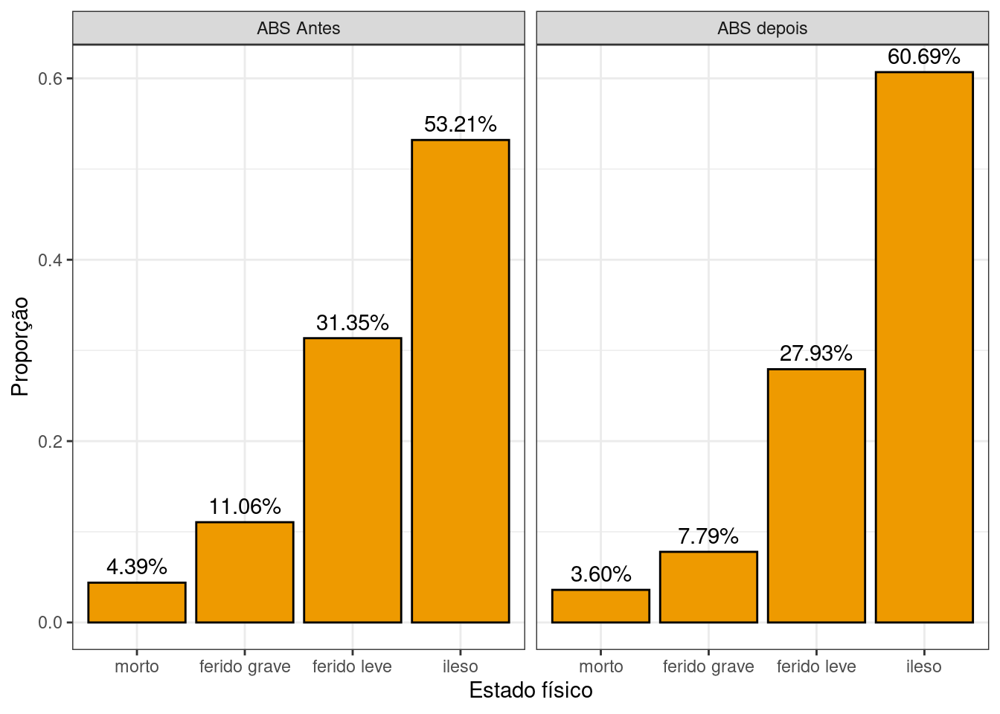
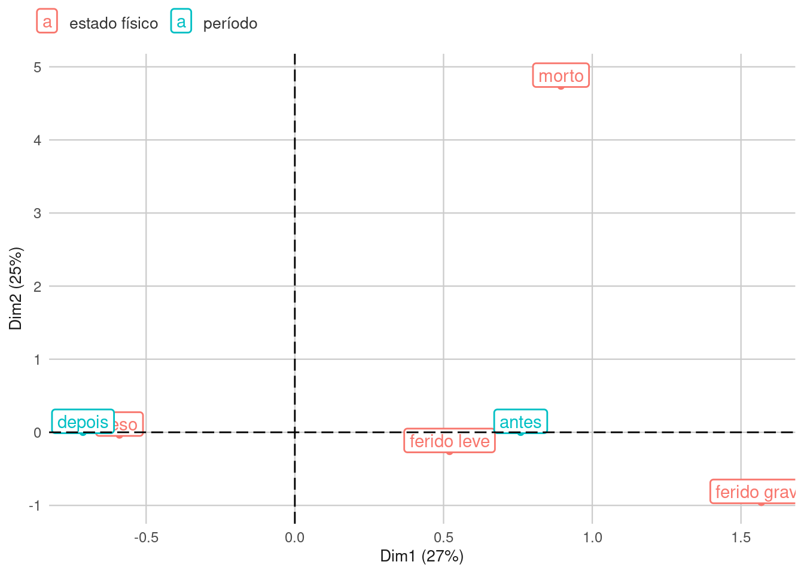

3 Resultados
Os resultados gerados incluem: a análise comparativa antes e depois da proporção de vítimas nas categorias ileso, ferido leve, ferido grave e fatal; a análise da associação entre as variáveis “estado físico da vítima” e a obrigatoriedade do Airbag e ABS; e os mapas perceptuais para verificação da associação entre as categorias das variáveis.
3.1 Proporção dos Estado Físico da Vítima
Para avaliar a proporção do estado físico da vítima antes e depois da obrigatoriedade, foram elaborados dois gŕaficos de barras relativos a porcentagem para demonstrar tal aumento ou diminuição dos casos. O gráfico a seguir (?fig-grafico-Airbag) apresenta a proporção do estado físico da vítima, mostrando os percentuais antes e depois da obrigatoriedade do Airbag.
Os gráficos evidenciam que a proporção de vítimas fatais diminuiu 2.21%, de feridos graves diminuiu 5.99% e de feridos leves diminuiu 1.9%. A proporção de vítimas ilesas aumentou 10.11%.
Já o gráfico abaixo (Figura 3.1) apresenta as proporções para o caso do ABS.
Fonte: Os autores (2024)
Com base no gráfico é possível verificar que:
- A proporção de vítimas fatais diminuiu 1.1%;
- A proporção de feridos graves diminuiu 6.6%;
- A proporção de ferido leve diminuiu 5%;
- A proporção de ilesos aumentou 12.7%.
Tanto no caso do Airbag quanto do ABS a redução da propoção de vítimas feridas (leves, graves ou fatais) acompanhada do aumento da proporção de vítimas ilesas indica um impacto positivo desses dispositivos na redução da severidade dos sinistros.
3.2 Associação entre o estado físico da vítima e a obrigatoriedade dos dispositivos
Verificou-se associação estatisticamente significativa a um nível de confiança de 95% entre o estado físico das vítimas e a obrigatoriedade ou não do Airbag (p-valor<0,01). Da mesma forma, verificou-se associação estatisticamente significativa a um nível de confiança de 95% entre o estado físico das vítimas e a obrigatoriedade ou não do ABS (p-valor<0,01)
Pearson's Chi-squared test
data: tab_abs
X-squared = 523.57, df = 3, p-value < 2.2e-163.3 Análise de Correspondência
A análise de Correspondência irá facilitar a visualização da associação que foi provada na seção anterior. Essa análise também se baseia na tabela de contingência e permite a elaboração do mapa perceptual, em que as categorias das variáveis são plotadas segundo duas dimensões. Aquelas categorias mais próximas umas das outras representam um maior nível de associação.
O mapa perceptual das variáveis “estado físico” e “período” para a base de dados Airbag está apresentado abaixo:
Fonte: Os autores (2024)
No gráfico da ?fig-grafico-airbag-ANACOR há a associação clara entre as categorias “depois” e “ileso”, enquanto as categorias “ferido grave” e “morto” estão mais próximas do “antes”; já a classificação “ferido leve” se encontra entre os dois períodos.
O gráfico da Figura 3.2, relativo ao mapa perceptual para a base de dados do ABS, será apresentado abaixo:

Fonte: Os autores (2024)
Pelo gráfico da Figura 3.2 pode-se observar que as classificações “ileso” e “depois” estão mais associadas, além das classificações “morto” e “antes” que estão altamente associadas (classificação “antes” sobrepôs a classificação “morto”).